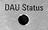

DAU Status LED (Optional)
 |
The DAU status LED comes with the LAN switch R&S CMW-B661H. It tells you whether the DAU option R&S CMW-B450H is installed and selected for use. For old DAU options up to R&S CMW-B450D, the LED is off.
The LED is especially useful in a multi-CMW setup with several DAUs. It helps you to identify the selected DAU and thus the relevant DAU connectors. If several DAUs are available in a multi-CMW setup, the software automatically selects the most powerful DAU.